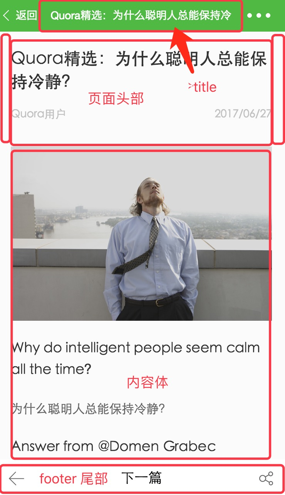

第四章：小程序中级实战教程：详情篇
§ 详情 - 页面制作
这一章节中，主要介绍详情页的页面制作过程
首先看一下我们最终要展示的页面

页面结构大体分为三部分，也是最常见的布局方式：头部、中间体、尾部。最顶部的是页面 title，也就是标题，如果是一般的页面，我们只需要在 detail.json 中增加如下配置即可：
"navigationBarTitleText": "Quora精选：为什么聪明人总能保持冷静"~~
但我们制作的详情页面信息是随着文章内容一直变化的，所以需要在代码中单独处理，就不需要在 detail.json 中添加
这里，我们先制作出：头部和尾部。中间的内容部分，会由 parse.js 解析文章数据生成。
Step 1. 页面准备
- 由于文章需要上下滚动，我们采用
scroll-view组件来包括整个页面内容
<!-- detail.html -->
<scroll-view scroll-y="true" enable-back-to-top="true" class="root-wrap">
</scroll-view>
scroll-view 组件，相当于我们在常规的 div 标签上增加了滚动功能并进行封装
- 然后调整下页面的高度和背景色
/* detail.css */
page {
background: #fbfbfb;
height: 100%
}
.root-wrap {
height: 100%
}
Step 2. 页面头部制作
- 头部包含三块内容：大标题、左浮动显示作者、右浮云显示日期，制作如下：
<!-- detail.html -->
<scroll-view scroll-y="true" enable-back-to-top="true" class="root-wrap">
<view class="wrapper">
<view class="info">
<view class="info-title">Quora精选：为什么聪明人总能保持冷静</view>
<view class="info-desc cf">
<text class="info-desc-author fl">哈利波特</text>
<text class="info-desc-date fr">2017/06/27</text>
</view>
<view class="info-line under-line"></view>
</view>
</view>
</scroll-view>
- 对应样式文件，注意：
fl(float:left)、fr(float:right)、cf(clear:float)三个样式都是在base.wxss中设置的全局样式
/* detail.css */
page {
background: #fbfbfb;
height: 100%
}
.root-wrap {
height: 100%
}
.wrapper {
padding-bottom: 96rpx
}
.wrapper .top-img {
width: 100%;
height: 470rpx;
vertical-align: top
}
.wrapper .info {
padding: 0 36rpx
}
.wrapper .info-title {
padding: 40rpx 0;
line-height: 60rpx;
font-size: 44rpx;
font-weight: 500;
color: #333
}
.wrapper .info-desc {
font-size: 28rpx;
line-height: 30rpx;
color: #c1c1c1
}
.wrapper .info-desc-author {
max-width: 65%;
text-overflow: ellipsis;
white-space: nowrap;
overflow: hidden
}
.wrapper .info-line {
margin-top: 24rpx
}
Step 3. 页面尾部制作
页尾类似于于菜单导航功能，用户可以进入
下一篇或返回列表，并且当页面滚动时候，固定在底部不动
修改页面 detail.html
<!-- 增加以下内容，footbar节点与info节点平级 -->
<view class="footbar">
<form>
<button class="footbar-back clearBtnDefault">
<view class="icon footbar-back-icon"></view>
</button>
<button class="footbar-btn clearBtnDefault">下一篇</button>
<button class="footbar-share clearBtnDefault">
<view class="icon footbar-share-icon"></view>
</button>
</form>
</view>
修改样式表
/* detail.css 增加以下样式内容 */
.wrapper .footbar {
position: fixed;
left: 0;
bottom: 0;
width: 100%;
height: 96rpx;
line-height: 96rpx;
background: #fff;
font-size: 32rpx;
color: #333
}
.wrapper .footbar-back,.wrapper .footbar-share {
position: absolute;
width: 96rpx;
height: 96rpx;
bottom: 0;
z-index: 2
}
.wrapper .footbar .icon {
position: absolute;
width: 42rpx;
height: 38rpx;
top: 30rpx
}
.wrapper .footbar-back {
left: 0
}
.wrapper .footbar-back-icon {
left: 30rpx;
background: url(https://n1image.hjfile.cn/mh/2017/06/06/1305a8ac4dc9347b59cc8c2c667122e5.png) 0 0 no-repeat;
background-size: contain
}
.wrapper .footbar-list {
left: 0
}
.wrapper .footbar-list-icon {
left: 30rpx;
background: url(https://n1image.hjfile.cn/mh/2017/06/09/1e630ac45547e6ab5260928e1d57a3c6.png) 0 0 no-repeat;
background-size: contain
}
.wrapper .footbar-btn {
text-align: center;
margin: 0 96rpx;
height: 96rpx;
line-height: 96rpx
}
.wrapper .footbar-share {
right: 0
}
.wrapper .footbar-share-icon {
right: 30rpx;
background: url(https://n1image.hjfile.cn/mh/2017/06/09/ebc3852fb865bd19182c09ca599d8ac1.png) 0 0 no-repeat;
background-size: contain
}
.wrapper .clearBtnDefault {
margin: 0;
padding: 0;
background: #fff;
border: 0;
border-radius: 0
}
.wrapper .clearBtnDefault:after {
content: '';
border: none;
border-radius: 0;
width: 0;
height: 0
}
页面尾部制作完成，下一步我们将处理中间的文章内容部分。
Step 4. 为中间的 content 内容预留位置
完整的页面代码如下
<scroll-view scroll-y="true" enable-back-to-top="true" class="root-wrap">
<view class="wrapper">
<view class="info">
<view class="info-title">Quora精选：为什么聪明人总能保持冷静</view>
<view class="info-desc cf">
<text class="info-desc-author fl">哈利波特</text>
<text class="info-desc-date fr">2017/06/27</text>
</view>
<view class="info-line under-line"></view>
</view>
<!-- 增加正文视图位置 -->
<view class="content">
文章正文
</view>
<view class="footbar">
<form>
<button class="footbar-back clearBtnDefault">
<view class="icon footbar-back-icon"></view>
</button>
<button class="footbar-btn clearBtnDefault">下一篇</button>
<button class="footbar-share clearBtnDefault">
<view class="icon footbar-share-icon"></view>
</button>
</form>
</view>
</view>
</scroll-view>